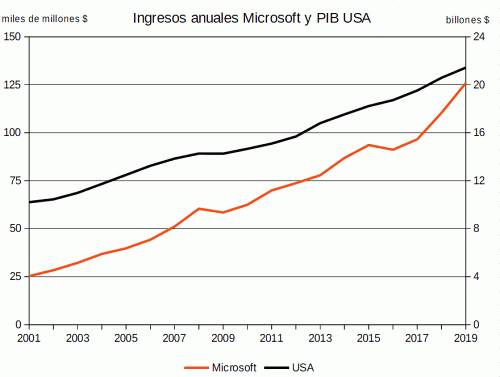

En los últimos años la industria del software ha vivido una nueva transformación. Hasta hace unos años, las empresas de software se dedicaban principalmente a vender software, pero últimamente las empresas de software más grandes han pasado a vender también hardware o servicios. Esta transformación ha marcado la evolución en los últimos 20 años de los ingresos de las empresas que producen los tres principales sistemas operativos actuales, Windows (Microsoft), Android (Google) e iOS (Apple), y que han seguido estrategias distintas.
 Microsoft Google Apple ComparativaMicrosoft ha sido probablemente la empresa de software más importante del mundo desde finales de los 80. Su principal fuente de ingresos ha sido siempre la venta del sistema operativo Windows y la suite ofimática Office. Ha realizado numerosos intentos de diversificar sus ingresos con la venta de aparatos (periféricos, reproductores, consolas, teléfonos, ordenadores), sin demasiado éxito excepto con la consola Xbox, y con la venta de servicios en la nube (Azure).
Google es una empresa de servicios de Internet nacida a finales del siglo XX. Su principal fuente de ingresos ha sido siempre la publicidad (Google Ads), aunque desarrolla el sistema operativo móvil más importante (Android) y teléfonos y ordenadores (Pixel, Chromebook, etc.).
Google no vende apenas software, pero su negocio se basa en el desarrollo de software que le permita mejorar y extender sus servicios de internet (buscador, correo, documentos, etc.).
Apple es la compañía más antigua de las tres y su principal fuente de ingresos ha sido siempre la venta de ordenadores Mac y de su sistema operativo, pero en los últimos años ha sabido desarrollar toda una gama de productos tecnológicos (reproductores iPod, teléfonos iPhone, tabletas iPad) de éxito descomunal que han multiplicado sus ingresos. Aunque Apple desarrolla el software de sus aparatos, el software ya no se vende de forma separada.
Aunque Microsoft demuestra que la venta de software sigue siendo un gran negocio, Google ha demostrado que la venta de servicios puede ser también un gran negocio y Apple ha demostrado que la venta de aparatos puede ser un negocio todavía mayor.
La mayoría de analistas llevan años prediciendo el declive inevitable de la venta de software, pero nadie sabe si el futuro del negocio del software estará más ligado a la oferta de servicios o al desarrollo de aparatos.
Autor: Bartolomé Sintes Marco
Última modificación: 22 de junio de 2020